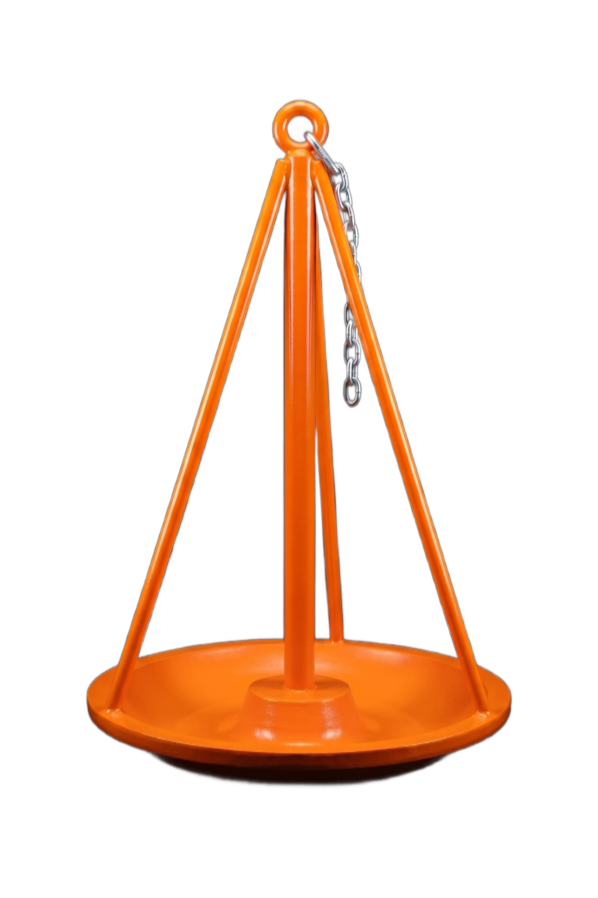
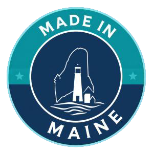

The chain wraps. Every time.
- Vertical stem invites chain to wrap around it
- Effective scope shrinks, peak loads rise
- Mooring balls can be pulled under
- Chain or shackle failure under load
- Harbormaster gets the call — at any hour
MoorSafe replaces the standard mushroom anchor with a conical design that stops chain wrap before it starts — protecting your boat, your mooring, and the people responsible for the harbor.
A look at the patent-pending conical geometry that stops chain wrap before it starts.
The cast-iron mushroom anchor is the standard for a reason — it sinks into mud and gains suction over time. But its vertical stem is also its weakness: as tides, currents, and wind shift, the chain wraps the stem. Scope shrinks. Peak loads spike. Mooring balls pull under. Boats break free.

We didn't reinvent the mushroom anchor — we removed its flaw. By adding three symmetrically positioned bars to a traditional mooring anchor, we created a conical shape that physically prevents the chain from wrapping. The anchor still beds into mud. Still gains suction. Still holds.
It also exceeded the structural strength of a traditional anchor in tensile testing — failing only at 40,657 lb versus 38,560 lb for the standard mushroom design.
See the full productWe tested the prototype at Yale Cordage in Saco and on a muddy seabed in Casco Bay. It met or exceeded the traditional anchor on every metric that matters.
A horizontal tensile test on a 100-foot test bed capable of 1.3 million pounds of force, loading both a 300 lb traditional mushroom anchor and a 300 lb MoorSafe prototype to failure.
Both anchors set in muddy seabed and left to bed in for 28 days, then tested with a lobster boat at 3:1 scope using a 4,000 lb digital load indicator.
The MoorSafe anchor was fully buried in the mud at the breakout test — a sign of better embedment over time. Read the full method and results on the Why MoorSafe page.
MoorSafe was founded by Scott Karkos and Captain Gregory Smith — a Maine Maritime Academy captain with two decades of mooring service work and a first-hand view of every way a chain wrap can ruin a season.
We design and manufacture in Maine because the people who make our anchors are the same people whose boats depend on them.
Read the story